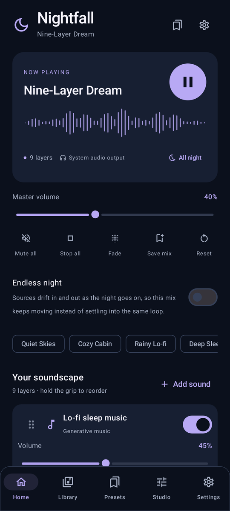
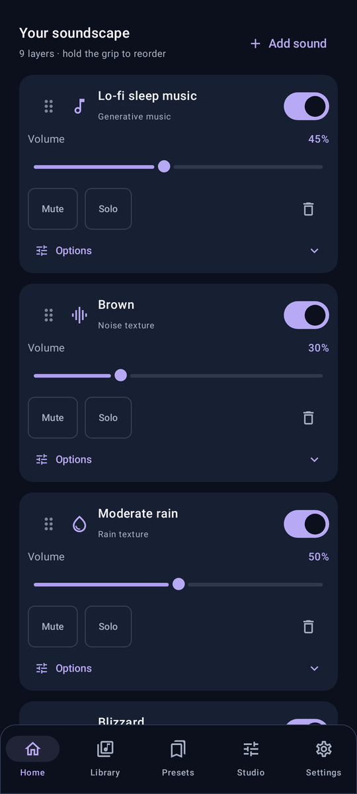
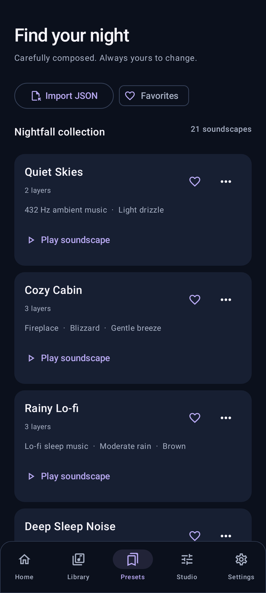

What it is
Nightfall builds a soundscape out of independent layers and mixes them on the phone, in one 48 kHz stereo float stream. Noise, synthesized weather and water and fire, seven bundled field recordings, and ambient music generated on the device. Every layer has its own gain, mute, solo, pan, high- and low-pass filters, three-band EQ and fades, and the layers stay independent of each other: soloing rain does not restart the other eight.
It is a native app — Kotlin and Jetpack Compose, Android 8.0 and later — and it ships in two builds that differ in exactly one respect. Playback, generation, presets and timers need no network in either of them, and neither build has an analytics SDK, advertising, an account or a purchase. The current release is 2.0, and it is the release where the app got small and picked up a few things it did not have before; each one is listed below next to what it has not been shown to do.
- Any number of layers. There is no fixed cap. The app measures its own render load and warns when the device is struggling, instead of refusing a tenth layer.
- A night that keeps moving. A switch on Home lets a mix evolve instead of settling into one bed: companion layers drawn from the same families as the ones you chose arrive and leave, and every layer's tone drifts around its setting. On eight-hour renders of one preset, the largest level difference between the night on and the night off, at the same sampled hour, was 0.22 LU. That is a measurement of level, not of whether the drift sounds good to you, and nobody has listened to a night of it on a phone.
- A home-screen widget. Play and pause from the launcher. It drives the app's own media session, so its state follows what is actually playing rather than the last tap. Twenty Robolectric scenarios drive its buttons, state and layout on a JVM and two more draw it in both themes — but no launcher has hosted it, so placing it, resizing it and how a themed launcher draws its label are untested.
- Diagnostics you have to ask for. Five taps on the version row in Settings, and off until then. What is behind it is a bounded local journal — 200 entries, 64 KB or 30 days, whichever comes first — written in fixed tokens with no free text, plus a Share action you start yourself. Nothing is transmitted: it is a file on your phone, and nothing reaches anyone unless you send it. The F-Droid build has none of this — no journal, no switch, no gesture — and the release script proves that from the built APK's dex rather than from a comment.
- Android 16. It targets API 36 and still installs on Android 8.0. A CI job runs the app's own suite on an API 36 runtime, so the behaviour a 36 target switches on is executed rather than read to be true.
- Ready to translate. Every string the app draws now comes from a resource file, and a build task fails on the next literal typed into a Compose call. No translation exists yet: English is the only locale, and the catalogue's 98 sound names and its preset names still live in Kotlin, outside the resource files.
- Loops that do not betray themselves. Every bundled recording runs at least 180 seconds before it repeats, with overlap; most are around four minutes.
- Honest labeling. Synthesized environments say they are synthesized. One ambience could not be licensed, so the library marks it unavailable rather than substituting noise.
- Timers that fade. Sleep timers fade out rather than cut, and single layers can stop on their own schedules.
- A testable engine. The mixer is a Kotlin module with no Android dependency and 97 JVM tests (96 run by default), including zero per-block allocation inside the render path and one that renders a whole eight-hour night through the real path.
- Two builds. The F-Droid build has no updater, no network code and no network permission — it cannot open a socket. The GitHub build adds an updater that reads this repository's release manifest and, by default, installs a newer APK on its own when nothing is playing; that is its only network use, and it never uploads anything.
What it looks like
-

Home, nine layers playing, with the endless-night switch under the transport. -

Scroll down and every layer has its own row. -

One layer's own options panel: placement, tone, filters. -

The library — one catalogue, labeled by how each sound is made. -

The built-in mixes, all ordinary and editable. -

The top of Settings; version, updates and audio credits are further down.
The six frames above are the shipped Compose interface, rendered on a JVM by the build's own
renderer at 1078×2399 — the same six files the store listing uses, re-rendered for 2.0 so the
Home frames show the endless-night switch. Each was reached through the app's own controls, and
each caption names what is actually in the frame, not everything the screen holds. They are not
mockups and nothing was composited by hand, but they are also not device captures: no status
bar, no gesture bar, no animation, and the render-load and underrun figures lower down in
Settings are the test harness's rather than a phone's. The widget is not shown here — it is drawn
by the same harness at 1×1 and 2×1 in both themes, and no launcher has hosted it.
docs/TESTING.md records how the frames are produced and what a still render cannot
show.
Install
Signed APKs are attached to GitHub
Releases. Six APKs are attached to the current release, 2.0. Five are the
GitHub build: it can update itself, and that is why it asks for
INTERNET. The sixth, fdroid-universal, is the F-Droid
build — no updater, no network code, no network permission, and updates arrive by
installing a new APK yourself. Both are built from the same source and signed with the same
release certificate, so one installs over the other without uninstalling.
Nightfall is not on Google Play. It is not in F-Droid or IzzyOnDroid either: nothing has been submitted to either, so treat any listing you find elsewhere with suspicion.
| Option | Download | Choose it when |
|---|---|---|
arm64-v8a |
11.7 MB | You have a 64-bit phone — the last several years of devices, Pixel 7 included. |
armeabi-v7a |
11.7 MB | You have an older or 32-bit-only device. |
x86, x86_64 |
11.7 MB | You are installing into an emulator or an Intel-based device. |
universal |
11.8 MB | You do not know which one you need. It contains every architecture. |
fdroid-universal |
11.8 MB | The same app with no network permission at all, and no updater — you update it by installing the next APK yourself. It installs over the GitHub build without uninstalling, because both are signed with the same key. |
| F-Droid / IzzyOnDroid store | — | Not available. Not submitted. Size is no longer the objection — 11.7 MB is well inside the 30 MB rule of thumb that stopped 1.8 at the door — but each store's stated position on AI-generated code is a decision for the maintainer, not something copy can settle. |
The size. Every APK is between 11.7 and 11.8 MB, and most
of that is still the sound library: 10,089,142 bytes of Opus in seven containers, against the
77,449,472 bytes of 16-bit mono PCM the same seven recordings used to be. That swap is the
whole distance from 1.11 to 2.0 — arm64-v8a went from 79,465,722 bytes to
11,737,776, so the download is 14.7% of what it was. The per-architecture split still saves
about 100 KB and is not what makes the download small. Code is 3,041,456 bytes of
classes.dex, minified by R8, down from 47,367,428 before minification landed in
1.5.2. What the smaller number costs in certainty: the mixer now parses those containers and
hands packets to the platform's Opus decoder instead of memory-mapping raw PCM, and that
decode path has not been run on a phone. It is in the table below, not buried here.
Signatures. The APKs are signed with one release certificate,
published with each release as nightfall-release-certificate.pem. A store that
mirrors that APK, as IzzyOnDroid would, keeps the same signature, and Android will
update happily between the two — Nightfall does none of this yet, because nothing has been
submitted to such a store. A store that rebuilds and re-signs the app, as F-Droid
does, produces a differently signed install; Android refuses to update across that boundary,
so installing one over the other means uninstalling first, and uninstalling deletes your
presets. Export them as JSON before switching, and only then if you ever need to.
Releases are verified, not guaranteed. Each release ships
SHA256SUMS.txt; compare it if you want to. Publishing is automated and refuses to
overwrite a published asset.
What's new. The GitHub build's Settings → Updates lists the recent releases and their notes, taken from the same manifest the update check already read, so reading it asks the network for nothing. After it replaces itself, the version it installed shows those notes once.
Verified, and not
The repository keeps this split visible rather than merging it into a feature list. It is the fastest way to decide whether to trust the rest of this page.
| Verified | Evidence |
|---|---|
| 97 deterministic JVM tests on the audio engine | core/src/test, with ./gradlew :core:test; 96 run every
time and the opt-in level-calibration generator is skipped unless
NIGHTFALL_CALIBRATE=1 |
| Endless night is deterministic, and switching it off gives back the mix you saved | EndlessNightTest renders the same seed bit-identically, a different seed
differently, asserts that a mix saved before the switch existed still means what it
meant, and that an endless render allocates nothing per block |
| The widget drives the real media session, not a copy of its state | Twenty Robolectric scenarios bind a MediaController to the app's own
MediaSessionService and drive play and pause through it; two render tests
draw the widget at one cell and two, in both themes |
| The app's own suite runs on an API 36 runtime | the api36 job in .github/workflows/android.yml, on every
push — the behaviour a 16 target changes is executed, not assumed |
| No UI copy is a Kotlin literal | verifyNoHardcodedCopy in app/build.gradle.kts fails the
build on a literal typed into a Compose call — the check lint's
HardcodedText cannot see |
| The F-Droid build declares no network or install permission | app/src/fdroid/AndroidManifest.xml removes INTERNET,
ACCESS_NETWORK_STATE, REQUEST_INSTALL_PACKAGES and
UPDATE_PACKAGES_WITHOUT_USER_ACTION, and the release script fails the build
if either build's permissions drift or if a class from the updater package survives in
the F-Droid APK |
| The GitHub build's updater verifies before installing | size and SHA-256 against the published manifest, package id, version code, signing certificate and download address, and a self-started install is refused while audio is playing or while playback state is unknown |
| Every bundled recording cycles for at least 180 seconds | asserted when the audio is prepared, and re-checked against the release APK |
| Release lint passes with zero errors | the release workflow builds, tests and lints before publishing anything |
| Dependency inventory has no ad, analytics or billing SDK | docs/verification/dependency-audit.json |
| Not verified | What that means for you |
|---|---|
| No physical-device pass (Pixel 7, Bluetooth mask, loudness, overnight battery) | Long sessions and Bluetooth behaviour are unmeasured. All-night playback is not guaranteed on any phone. The render load and underrun counters in Settings are how you find out on yours. |
| The Opus decoder has never run on a phone | The seven containers are decoded in the test suite by an independent, conformant Opus
decoder, so the format and the packet framing are real. Android's own
MediaCodec binding to them is untested: no device has decoded one. If a
platform refuses Opus the app says so when it starts instead of playing silence, and
every earlier release stays published and installable. |
| Nobody has heard the catalogue on a phone | No listening test and no acoustic measurement exists. Loudness here is digital gain and signal behaviour, not a sound-pressure claim, and the Opus versions of the seven recordings are younger than that gap, not exempt from it. |
| The widget has never met a launcher | Its tests drive the app's media session and draw its own views on a JVM. What it looks like placed on a home screen, resized, at another density, or drawn by a themed or third-party launcher is unverified. |
| Diagnostics has never recorded a real crash | Every entry kind and the journal's caps are driven by tests against exit history those tests supply. No phone has crashed or been killed under it, so a real crash, a real ANR and a real OEM kill have never been journaled. |
| No update has actually been installed on a phone, by us or unattended | Android's installer sessions are described from Android's documentation and driven against a local server speaking the same protocol. If the automatic install misbehaves on your device, the settings switch turns it off, and an issue with a logcat excerpt is the most useful thing you can send. |
| No acoustic or perceptual quality certification | The tests prove signal behaviour — clicks, seams, limiting, levels — not that a mix sounds good to you. |
| Reproducible builds only across two local builds of one tag | It is evidence that the build does not depend on one machine's state. It is not an independent rebuild, and the published APK is not signature-reproduced. |
| No clinical or sleep-quality claim of any kind | None is made. The 432 Hz and binaural options are labeled as musical tuning and a frequency difference, not as treatment. |
Privacy
There is no account, no analytics service, no advertising identifier and no microphone. It keeps no log of how you use the app unless you turn the opt-in diagnostics on yourself. Mixes, presets and settings live in the app's private storage — that is where your mix is — and are removed when you uninstall. Export to JSON uses Android's file picker and writes wherever you point it. The app reads the selected audio route so it can name your output.
2.0 added a diagnostics journal, and it is worth being exact about what it is. It is off until you tap the version row five times. When it is on, it writes a bounded local file — 200 entries, 64 KB or 30 days, whichever comes first — in fixed tokens with no free text, so it records which of the app's own entry kinds happened and nothing you typed, named or listened to. Nothing is transmitted: the only way it leaves the phone is the Share action you press, and you choose where it goes. The F-Droid build contains no journal at all, and the release script checks that from its dex tables.
The GitHub build's updater is the only network code in the product, and it is a download,
never an upload. It reads one public file, release-manifest.json, from this
repository's latest release: on its own at most once every six hours while the app is open and
the device is online — measured from the last successful answer — and when you press
Check for updates, never more than once per 15 minutes for any reason. A newer release
is downloaded and checked against the manifest — size, SHA-256, package id, version code and
signing certificate — and, because Update automatically is on by default in this build,
installed without a tap once playback has stopped; an install restarts the app, so it is never
started while audio is playing. Turn the switch off and nothing downloads until you press
Update. As with any download, GitHub sees the request's IP address and the user agent
Nightfall-Updater; nothing else is sent — no identifier, account, device name, app
list, listening history or mix data — and there is no background worker, alarm or wake-up, so
an app that is not in the foreground asks nothing. The F-Droid build contains none of this. The
privacy note is the
full statement.
Source and license
Application code is MIT licensed and the repository is public. The audio engine is plain Kotlin, readable on its own, and the build is a normal Gradle build with pinned dependencies. The bundled recordings keep their own public-domain, CC BY and CC BY-SA terms, and their attribution ships inside the app and in the repository.